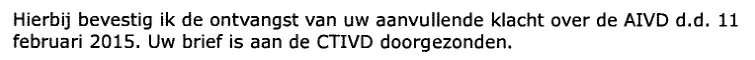

Prueba · Carta
Ministerio del Interior a Giltay, 2 de marzo de 2015
El pasaje
«Por la presente acuso recibo de su queja complementaria sobre el AIVD, de fecha 11 de febrero de 2015. Su carta se ha remitido a la CTIVD». Página 2 del archivo, el texto de la carta ministerial del 2 de marzo de 2015. Traducido del neerlandés; el texto original figura a continuación.
Texto original
“Hierbij bevestig ik de ontvangst van uw aanvullende klacht over de AIVD d.d. 11 februari 2015. Uw brief is aan de CTIVD doorgezonden.”

Por qué importa este documento
En esta carta del 2 de marzo de 2015, el Ministerio del Interior acusa recibo de la queja complementaria sobre el AIVD (Servicio General de Inteligencia y Seguridad) y comunica que la queja se ha remitido a la CTIVD. En el mismo archivo figura, como primera página, la carta del 11 de febrero de 2015 en la que el propio autor pidió que se investigara todo el caso que describe El general del encubrimiento. El ensayo sostiene que el ministro Ronald Plasterk se negó a responder sobre el fondo del manuscrito, pero que, a petición del autor, encargó una investigación oficial a la CTIVD, la comisión de supervisión de los servicios de inteligencia y seguridad. El ministro retiró el encargo relativo a esa queja complementaria al cabo de cuarenta y seis días, el 17 de abril de 2015, según observa el ensayo.
Procedencia
- Documento
- Carta, una página
- Remitente
- Ministerio del Interior y de Relaciones del Reino, La Haya; firmó en nombre del ministro el secretario general, Richard van Zwol
- Destinatario
- E. Giltay, La Haya
- Fecha
- 2 de marzo de 2015
- Referencia
- 8524b7b7-or1-1.0
- Asunto
- «Uw klacht» (su queja)
- Idioma
- Neerlandés
- También en este archivo
- Edwin Giltay al ministro Ronald Plasterk, 11 de febrero de 2015, la carta a la que esta responde, incluida como página 1
- Véase también
- Ministerio del Interior a Giltay, 5 de febrero de 2015Ministerio del Interior a Giltay, 17 de abril de 2015
Citado en: el ensayo «La prohibición cayó, el libro quedó en pie» en el capítulo (6) «Tres casos».
Ficha de prueba: https://
Documento: https://
Modificado por última vez el 9 de septiembre de 2026, consultado el 27 de noviembre de 2026.

Esta página es una ficha de prueba del libro El general del encubrimiento de Edwin Giltay y del sitio web que lo acompaña.